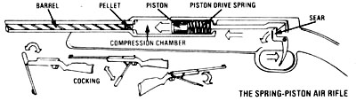
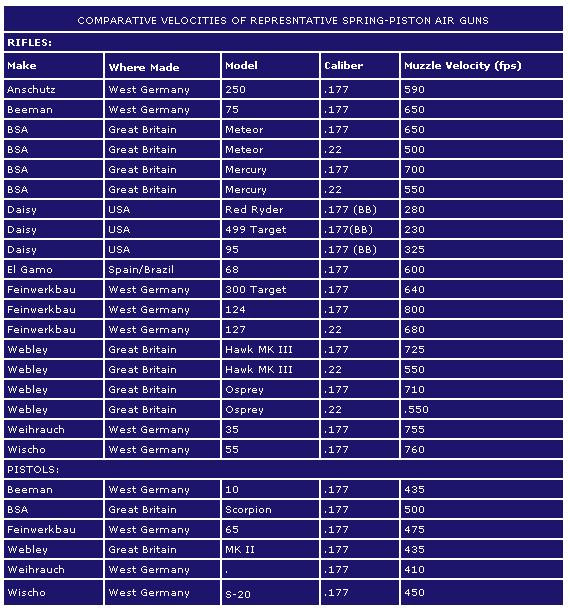
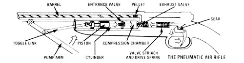
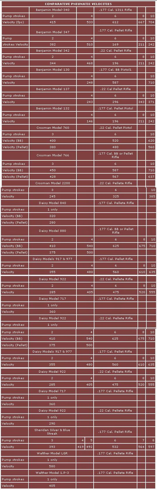
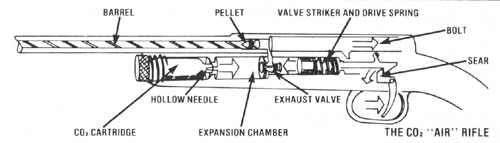
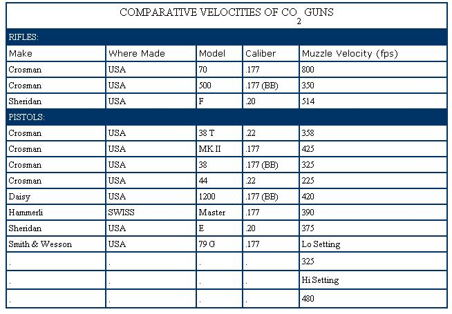

Excerpted from Outdoor Life magazine (copyright© 1980), annual subscriptions (12 issues) are available for $10 online or from Outdoor Life Customer Service, PO Box 60001, Tampa, FL 33660-0001.
All the folks here at Mother Earth News were pleased with the response generated by Gary Kent's article, "The Homestead Firearm," that appeared in issue 67. (For information on ordering back issues, check out the Mother Earth News Archive" href="http://www.motherearthnews.com/browse.aspx?Subject=ACD">Mother Earth News Archive on CD-ROM from Mother Earth Shopping.) Many readers are interested in having a practical gun on hand to protect their livestock and homes, and occasionally put food on the table, and those readers who aren't interested in owning such weapons don't begrudge others the right to do so.
Furthermore, a good number of the letters received here asked for more information on firearm alternatives. Well, it would be hard to imagine a more practical tool-for such tasks as controlling pests, repelling small predators and putting meat in the homestead freezer-than the air rifle. Such firearms are often surprisingly powerful (and, therefore, must be handled with the same respect as "real" guns), quite accurate, easy to maintain and extremely inexpensive to shoot. For a total spare-parts-and-ammunition investment of well under $200, you'll be able to add a rabbit to the pot, as times demand, for years to come!
SPRING-PISTON GUNS
The most common air gun mechanism is the so-called spring-piston type used in millions of American BB guns. Since this basic mechanism is the power source of our simplest, least expensive air guns, one might conclude that it is relatively inefficient. Such is not the case. Essentially the same mechanism is used in the most expensive, most accurate and most powerful airguns.
In simplest terms, a spring-piston gun is powered by a spring-powered piston that's contained in a closely fitted, tubelike chamber. This chamber serves as the gun's receiver, which is mounted in the stock with the barrel attached to one end and the firing mechanism attached to the other. When the gun is cocked, the piston is forced to the rear of the chamber, where it is held in place by a catch, or sear, linked to the trigger. At this point the mainspring is compressed to full tension.
When the trigger is pulled, the powerful mainspring slams the piston through the chamber, driving and compressing the air in front of it. This body of air escapes through the barrel, driving the projectile.
The relative projectile velocity of a spring-piston air gun is determined by a number of factors, but velocity is mainly a function of the speed and power of the piston and the volume of air displaced. Other factors are the weight and size of the pellet, and the amount of air leakage which occurs around the projectile and piston. Naturally, a projectile which efficiently seals the bore, and a close (but not tight) piston-to-chamber fit are more efficient than tolerances that permit air blowby.
For illustration, look inside a more or less typical Daisy BB gun. When the gun is cocked, the piston is levered back against the spring, which in turn is "loaded" to a force equal to about 60 pounds. When the trigger is pulled, the spring drives the piston forward in the chamber for a distance of slightly over 2 inches.
In everyday ballistic terms, the piston velocity tops out at about 41 feet per second. Why then, you may ask, does the BB projectile have a muzzle velocity of over 300 fps? First of all, the piston and spring are not pushing the BB itself, but rather a column of air. Since this moving column of air can escape only through the small hole in the barrel, it obeys the laws of gas dynamics and speeds up in order to move its volume out of the chamber. This means that the air in the barrel moves faster than the air immediately ahead of the piston. This is what gives the BB its first big push. The second kick is supplied by the air compressed in the chamber.
At first the BB doesn't want to move (because of its inertia), causing the air to "pile up" behind it and become compressed. In fact, the piston has traveled a half-inch before the BB moves at all. This means that the air in the chamber is being compressed, eventually reaching a pressure greater than 300 pounds per square inch! Even after the piston stops, this compressed air continues driving and accelerating the BB. At the moment the piston stops its forward motion, the BB has a velocity of some 175 fps and has traveled less than 2 inches up the barrel. At this point the compressed air, which is near its peak, takes over and accelerates the BB to about 300 fps during its next 3 inches of travel. As the BB moves up the barrel, it reaches a velocity of about 330 fps.
Naturally, different makes and models of spring-piston guns generate different pressures and velocities.
When air is compressed, heat is generated, and this brings about a peculiar side effect when we shoot air guns. When the chamber pressure in our Red Ryder carbine is at its peak, the internal temperature soars to a momentary high of 620°F. This temperature can ignite residual oil in the chamber, which accounts for the smoke we sometimes see coming from the muzzle and for the characteristic smoky smell we detect when shooting air guns. Occasionally, when too much oil is pumped into an air gun barrel (either accidentally or on purpose), the resulting diesel effect, or oil explosion, raises chamber pressures and velocities well above normal. This explains the harsh jolt you may sometimes feel when shooting a freshly oiled air gun and also explains why it is best to lubricate with special nonflashing oils. Dieseling is hard on guns.
The spring-piston system is used in a wide assortment of makes, models and styles of air guns. The most common cocking arrangement, of course, is the under-lever arrangement used on millions of BB guns.
If a more powerful spring is used, a cocking system employing greater leverage is required. Thus the most powerful spring-piston guns are of the barrel-lever variety in which the barrel itself, by means of a toggle linkage, provides the leverage to cock the powerful mainspring. The barrel is hinged at the breech, just ahead of the receiver-cylinder assembly, and pivots downward during the cocking cycle. This exposes the breech end of the barrel for convenient loading and maintenance. In this type of gun, the rear sight is mounted on the barrel where it is fixed in relation to the front sight.
Another high-leverage cocking arrangement features a separate cocking arm located alongside or underneath the cylinder-receiver. This is the system used on the top tournament-grade air guns, such as the Feinwerkbau Model 300 rifle and models 65 and 80 pistols, and it has the accuracy advantage of having the barrel rigidly attached to the receiver assembly. Some side and under-lever makes are loaded by placing the projectile directly into the breech, while others are loaded by means of a ported tumbler which rotates up for loading and then pivots the projectile into barrel alignment.
One of the advantages of spring-piston air guns is their highly uniform shot-to-shot velocity. Just as with powder-burning guns, uniformity of velocity contributes to close grouping. On the other side of the ledger, however, are a couple of problems, inherent in spring-piston guns, which tend to cause accuracy problems. The first of these is the massive sear mechanism required to hold the powerful spring securely in the cocked position. A common by-product is a hard and creepy trigger pull. This is noticeable in inexpensive American-made BB guns, but quite a few expensive European air guns have equally poor trigger pulls. Apparently, the problem can be overcome only by complex, multilever trigger mechanisms which add to the price.
The other disadvantage to accuracy is the very noticeable recoil, or bounce, generated by the powerful spring and piston motion. This is so troublesome to accuracy that top competition models feature special anti-recoil devices. The best of these work so well that the rifles and pistols seem not to move at all when they are fired. Some of these competition guns sell for over $600.
PNEUMATIC GUNS
Pneumatic air guns are also known as pump-up guns because of the pumping operation necessary to accumulate and compress air in the "air tank" or reservoir. Modern pneumatic air guns made by Benjamin, Crosman, Daisy, Sheridan and Walther generally have compression chambers enclosed in the stock recess beneath the barrel and conveniently close to the breech.
Operation of the pneumatic system is simple. When the pump handle is pulled out, or extended, it withdraws a piston, or plunger, which works much like a bicycle tire pump. On the out stroke, air enters a cylinder that closely encloses the piston. On the in stroke, the piston forces the trapped air into the compression chamber through a valve which lets air in but not out.
With each stroke of the pump handle, an equal volume of air is pumped into the compression chamber. As the pressure within the chamber increases, it becomes progressively harder to pump in more air. Since heat is produced as air is compressed, the compression chamber becomes noticeably warm.
To fire the gun, another valve at the other end of the cylindrical compression chamber is opened, and the compressed air is vented into the gun's breech. It races up the barrel to drive the projectile. Velocity depends on both the pressure of the air and the volume of air let into the barrel.
This basically simple mechanism is complicated somewhat by the need for a sealed breeching system which must be opened for loading, and by a firing system which opens the exhaust valve. Since this valve is locked in a tightly closed position by high internal pressure, it requires considerable pressure to open it. It's comparable to opening a barn door into a high wind. This is why the pump-up firing mechanism actually knocks the valve open by means of a spring-loaded striker. When you cock a pneumatic gun (usually by opening the breech to load), you are actually withdrawing this rather heavy striker against spring pressure. The fall of the striker accounts for the solid thump you feel when you pull the trigger.
The accuracy potential of the pneumatic or pump-up system is excellent. Two top-rated tournament guns, Walther's LGR rifle and LP3 pistol, are of pneumatic operation. They differ from most pneumatic guns in that they are pumped up by a single stroke of the pump lever and feature virtually motionless firing (valve opening) mechanisms which result in recoilless operation. The Daisy pellet firing models 717 (.17 caliber) and 722 (.22 caliber) pneumatic-style target pistols feature singlestroke charging, as does the Daisy Model 850 pellet-BB rifle. Most pneumatics can be lightly pumped for plinking and target shooting, or they can be pumped to higher velocities for hunting or long-range shooting. This advantage is offset by the physical effort, noise and motion required to pump up the reservoir.
C02 GUNS
The mechanics of CO 2 guns are quite similar to those of pneumatic guns. The principal difference is that the CO 2 gas is pre-compressed rather than being compressed in the gun as needed. The exhaust valve, venting, breeching and firing mechanisms of CO 2 and pneumatic systems work in such similar fashion that on some models of each by the same manufacturer many parts are interchangeable. In other models of CO 2 guns, considerable individuality is apparent.
Though certain other gases could be used as a power source, carbon dioxide has the physical and chemical advantages of being nonflammable, noncorrosive, odorless, inexpensive and not inclined to react chemically.
The CO 2 in the familiar little seltzer bottle cylinders is compressed into liquid form. When a CO 2 cartridge is inserted into the gun and the steel punctured, a certain amount of the liquid CO 2 boils off in gas form and fills the gas reservoir. When a specific amount of gas has boiled off, the resulting vapor pressure keeps the remaining carbon dioxide liquid. This fortunate characteristic, as we shall see, is important to the practical operation of CO 2 guns.
When the trigger is pulled and the striker opens the exhaust valve, the gaseous CO 2 is vented off to propel the BB or pellet. The exhaust valve closes immediately, and CO 2 gas is again boiled off until the vapor pressure reaches equilibrium with the remaining liquid. The evaporating CO 2 has a refrigerant effect which noticeably cools the gun's chamber and barrel. This cooling effect can result in a slight, but steady, reduction of gas pressure if the gun is fired rapidly. Under normal conditions, however, the vapor pressure is constant and results in quite uniform velocities. The boiling-off period of CO 2 gas, by the way, is virtually instantaneous, occurring faster than one can pull the trigger.
The speed and ease of shooting CO 2 guns causes them to be fired more freely than other types of air guns, and this leads to the main objection: the expense of replacement gas cylinders. The number of shots per cylinder in most guns ranges from 30 to 80 or more. The last few shots from a nearly empty cylinder may have a noticeably lower velocity than normal. Some models feature a low-pressure release valve which automatically empties the cylinder when the CO 2 pressure falls below practical shooting levels.
CALIBERS
Though there have been air guns that fire bullets as large as .60 caliber and as small as No. 6 shotgun shot (.110 inch), there has been, since the turn of the century, a trend toward standard sizes of air gun calibers. At present the four principal calibers are rather loosely known as .17, which includes BB's and .177 pellets; .20, which is the standard Sheridan caliber; .22, which includes a large array of pellet-firing pistols and rifles, and .25-caliber pellet and dart guns.
AIR GUNS FOR HUNTING
State regulations are often vague about the use of air-powered arms for hunting. Many states simply list the "legal arms" for hunting, and these commonly include rifle, shotgun, longbow and, in some cases, handgun. Air guns and crossbows are commonly omitted and are therefore technically illegal for hunting game. The objection to air guns and crossbows is that they are silent and ideal for poaching. In states that do not list air guns as legal for hunting, are they legal for shooting pests such as rats? Again, most states do not deal with the question in their regulations. Of course, air-powered arms are not powerful enough for big game, but if you are thinking of using one for small game or pest shooting, it's best to ask your state conservation department whether it is legal to do so.
|
 |
 |
 |
|
 |
 |
 |